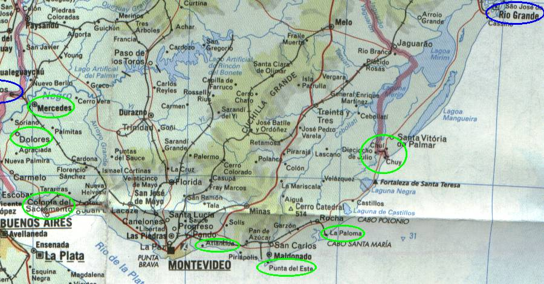

← anterior | principal | próxima →

- Fray Bentos
- Mercedes
- Dolores
- Colonia del Sacramento
- Atlântida
- Punta del Este
- La Paloma
- Chuy/Chuí
- Rio Grande
Dicas
- Uruguai: fazendas, tranqüilidade
- Brasil: comida barata, falam português
Dolores e as motonetas
Passamos uma noite em dolores. Cidadezinha muito legal. Pequena e pacata, quase não tem carros. A grande maioria da população tem motonetas.
Como era uma sexta-feira, fomos até a tradicional praça central na frente da igreja e ficamos uma cara lá olhando os locais.
A grande diversão da sexta a noite é todos ficarem andando em volta da praça com suas motonetas, sem parar, durante horas, enquanto outros sentam nos banquinhos da praça e ficam olhando as motos passarem. Amável não? :)
Cansados de ver tantas motos passarem, fomos dormir. :)
Ah! A maioria das cidades do interior norte do uruguai tem um monte de palmeiras na beira da estrada bem na sua entrada.
Colonia del Sacramento
Cidade turística massa. é legal pra passar um dia, mas tudo lá é muito caro. Dá até pra alugar motos ou carrinhos de golfe pra passear pela cidade.
Montevideo
Incrível, até a capital do país passa a mesma sensação que as cidades do interior: tranqüilidade.
Era um sábado a tarde, e num passeio pela avenida costeria pudemos constatar que TODA a cidade estava lá, ou na grama ou na praia, ao sol, tomando chimarrão, olhando o movimento, muito legal, sociabilidade 100%.
Praias
Daqui adiante, segue-se um monte de praias, que merecem ser revisitadas com mais calma.
Dormimos em atlântida e em la esmeralda.
Na saída de la esmeralda, a Toyota não pegava e tava difícl de empurrar, pois estava na areia. De repente, um monte de locais estavam lá pra ajudar, empurramos a bichinha e nada dela pegar. Depois quando foram chamar um trator pra nos rebocar, do nada bati a chave e ela pegou, totalmente aleatório...
O uruguai é massa. Pacato, tranquilo. Tem que voltar lá outra hora.
Brasil estamos de volta
Para nosso alívio, pois já estávamos de saco cheio de rodar tanto, voltamos ao nosso *Brasil, entrando pelo chuí.
Foi indescritível ouvir a voz do frentista de um posto perto da fronteira falando em português! Estávamos de volta. E também nosso almoço foram alguns misto quentes numa lanchonete, e foi uma das melhores refeições da viagem, que saudades da nossa comida.
íamos percorrer por fora aquela tripinha da lagoa dos patos, mas ao chegar em rio grande vimos que já tínhamos perdido o horário das balsas do dia (08:00, 13:00 e 16:00), então resolvemos seguir até pelotas.
← anterior | principal | próxima →